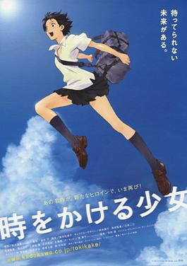

"Tokyo Revengers" is a Japanese manga and anime series that blends
elements of crime, drama, and time travel. The story follows Takemichi
Hanagaki, a directionless adult who discovers that his former girlfriend
and her brother have been murdered by a Tokyo gang called the Tokyo
Manji Gang. Through a mysterious time-traveling ability, Takemichi finds
himself back in his teenage years, determined to alter the future and
prevent the tragedies from occurring. The series combines gang
conflicts, intricate character relationships, and a mix of present and
past timelines, offering a compelling narrative of redemption,
friendship, and the consequences of one's actions.
The Girl Who Leapt Through Time

"The Girl Who Leapt Through Time" ("Toki wo Kakeru Shoujo") is a
Japanese animated film directed by Mamoru Hosoda. The story revolves
around Makoto Konno, a high school student who discovers she has the
ability to leap through time. The film explores how Makoto uses this
newfound power, initially for personal convenience but later realizing
the impact on her life and the lives of those around her. Key aspects of
the story include Makoto's attempts to correct minor mistakes and
improve her circumstances, but as she delves deeper into the
consequences of her actions, she begins to understand the weight of
manipulating time. The narrative also involves friendship, romance, and
the inevitability of life's challenges. "The Girl Who Leapt Through
Time" is celebrated for its heartfelt storytelling, charming characters,
and its exploration of the consequences of time travel. The film has
received critical acclaim for its emotional depth and remains a beloved
work in the realm of anime films.
Noein: To Your Other Self
"Noein: To Your Other Self" is a Japanese anime series that blends
science fiction, alternate dimensions, and time travel. The story
revolves around a group of friends who become involved in a conflict
between two parallel dimensions: La'cryma and Shangri-La. La'cryma is a
futuristic world facing destruction, and Shangri-La is our contemporary
world. The central plot involves Haruka Kaminogi, a girl with mysterious
powers, who becomes the target of both dimensions. A group of enigmatic
individuals, including the dragon-like entity Noein, seeks Haruka for
reasons that transcend time and space. As the series unfolds, it
explores complex themes, such as the nature of reality, the impact of
choices, and the interconnectedness of individuals across different
timelines. "Noein" is known for its visually distinctive animation
style, its thought-provoking narrative, and the exploration of quantum
physics concepts. The series offers a unique and engaging experience for
viewers interested in intricate sci-fi plots and multidimensional
storytelling.
Orange
"Orange" is a Japanese anime and manga series that combines elements of
romance, drama, and science fiction. The story follows Naho Takamiya, a
high school student who receives letters from her future self. These
letters provide guidance on how to navigate events and make decisions to
prevent the regrettable death of Kakeru Naruse, a new transfer student.
The narrative explores themes of friendship, love, and the impact of
small actions on the course of one's life. As Naho and her friends
follow the instructions in the letters, they grapple with the challenges
of altering the future and creating a better outcome for Kakeru.
"Orange" is praised for its emotional depth, character development, and
the exploration of the complexities of relationships. The series
combines a touching coming-of-age story with the speculative element of
receiving messages from the future.
Puella Magi Madoka Magica
"Puella Magi Madoka Magica" is a Japanese anime series that subverts the
magical girl genre, taking a darker and more complex approach. The story
follows Madoka Kaname, a middle school student who is offered the
opportunity to become a magical girl by the mysterious Kyubey. However,
as Madoka and her friends delve into the responsibilities and
consequences of being magical girls, they discover the harsh realities
and sacrifices involved. The series explores themes of despair,
sacrifice, and the consequences of one's choices. It features intense
battles against mysterious creatures known as witches and delves into
the emotional struggles of the characters as they face increasingly
challenging situations. "Puella Magi Madoka Magica" is renowned for its
psychological depth, intricate storytelling, and unexpected twists. It
has garnered critical acclaim for its deconstruction of the magical girl
genre and its ability to blend dark themes with visually striking
animation.
Higurashi When They Cry
"Higurashi When They Cry" ("Higurashi no Naku Koro ni") is a Japanese
anime and visual novel series known for its psychological horror and
mystery elements. The story unfolds in the rural village of Hinamizawa,
where a series of violent and mysterious events occur every year during
the Watanagashi Festival. The narrative is presented in multiple arcs,
each exploring different perspectives and timelines. The characters,
including a group of friends, experience time loops and alternate
realities, leading to a complex mystery involving supernatural elements,
curses, and the darker aspects of human nature. The series combines
suspenseful storytelling with moments of intense violence, creating a
chilling atmosphere. "Higurashi When They Cry" is celebrated for its
atmospheric tension, psychological horror, and its ability to play with
the expectations of the audience.
Re:Zero - Starting Life in Another World
"Re:Zero - Starting Life in Another World" is a Japanese light novel
series that has been adapted into an anime. The story follows Subaru
Natsuki, a young man who is transported to a fantasy world. Subaru
discovers that he has the ability to return from death to a certain
point in time whenever he dies. With this power, he embarks on a journey
to save his friends and unravel the mysteries of the world. The
narrative explores themes of life, death, and the consequences of one's
actions. Subaru faces numerous challenges and makes difficult choices,
and each death brings a new perspective on the story. The series
incorporates fantasy elements, complex characters, and a unique take on
the isekai (alternate world) genre. "Re:Zero" has gained popularity for
its intricate plot, emotional depth, and the protagonist's struggle with
the psychological toll of death and resurrection. The series has
captivated audiences with its blend of fantasy, drama, and suspenseful
storytelling.
Erased
"Erased" ("Boku Dake ga Inai Machi") is a Japanese anime series adapted
from the manga of the same name. The story follows Satoru Fujinuma, a
struggling manga artist with a peculiar ability called "Revival." This
power allows him to go back in time a few minutes before a
life-threatening incident occurs, giving him the chance to prevent it.
However, when Satoru's mother is murdered, he experiences a Revival that
sends him back to his childhood in 1988. He realizes that the key to
solving his mother's murder is connected to a series of abductions and
killings of his classmates that occurred when he was a child. Determined
to change the past and prevent the tragedies, Satoru embarks on a
suspenseful journey filled with mystery, emotional moments, and
unexpected twists. "Erased" is praised for its intricate plot,
well-paced storytelling, and its exploration of themes like regret,
redemption, and the impact of small actions on the course of one's life.
The series has captivated audiences with its suspenseful narrative and
compelling characters.
Steins Gate
"Steins;Gate" is a Japanese visual novel, anime, and manga series known
for its intricate plot and exploration of time travel. The story
revolves around Rintarou Okabe, a self-proclaimed mad scientist, and his
friends as they accidentally discover a way to send messages to the
past, altering the present and creating unforeseen consequences. The
narrative delves into the consequences of time manipulation, exploring
themes of cause and effect, and the butterfly effect. As Okabe and his
friends investigate the mysteries surrounding their discovery, they
become entangled in a web of conspiracies and must confront the moral
and existential implications of their actions. "Steins;Gate" is praised
for its character development, emotional impact, and clever handling of
time travel concepts. The series blends elements of science fiction,
thriller, and drama, offering a unique and engaging experience for
viewers interested in complex narratives and thought-provoking themes.
Tatami Galaxy
"Tatami Galaxy" ("Yojouhan Shinwa Taikei") is a Japanese anime series
that blends elements of psychological drama, romance, and satire. The
story follows an unnamed protagonist, often referred to as Watashi (I),
as he navigates college life. The unique narrative structure involves
Watashi reliving his college years in different parallel universes, each
influenced by different choices and perspectives. The series explores
themes of identity, regret, and the consequences of decisions. Watashi
joins different clubs, meets various characters, and experiences a
variety of scenarios, all while searching for the elusive "rose-colored
campus life." The narrative is presented in a non-linear fashion,
providing viewers with a distinctive and thought-provoking storytelling
experience. "Tatami Galaxy" is praised for its clever writing, artistic
style, and exploration of existential themes. It offers a complex and
engaging narrative that encourages viewers to reflect on the choices
they make in life and the impact those choices can have on their
personal development.